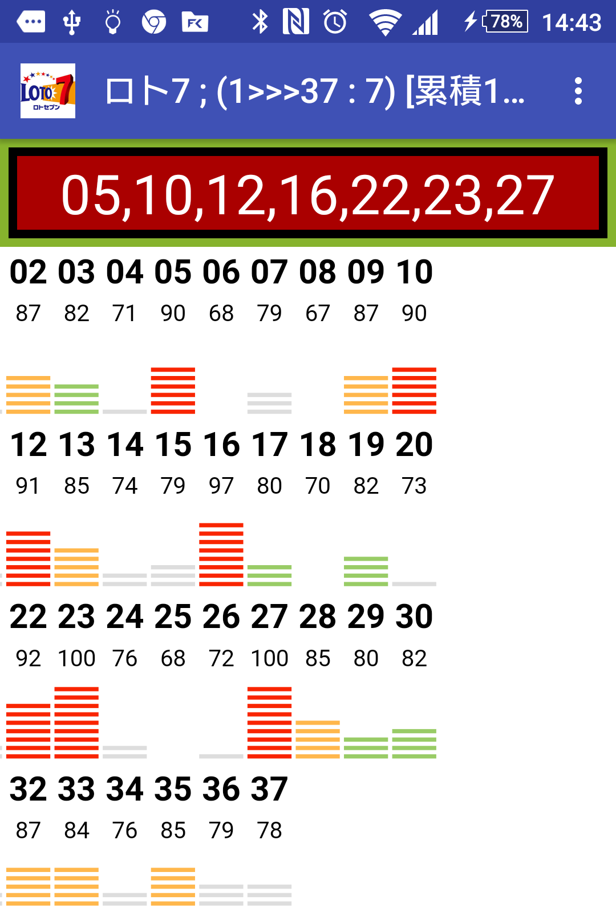
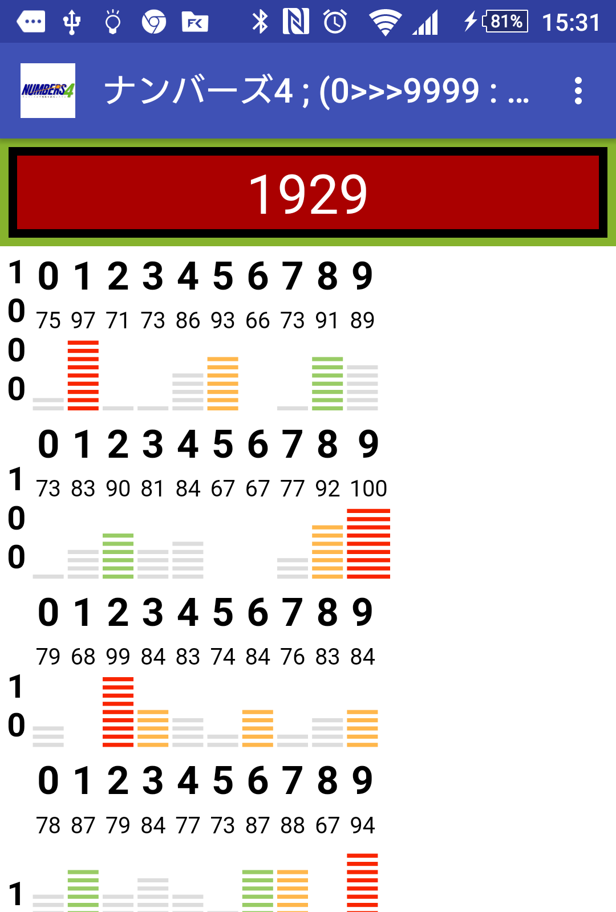

|
Random number generator corresponding to various lot lotteries
Atare kunn |
|
Atare you cannot do a thing having difficult "expectation". When it does not occur to the number that seems to be while praying God when "is the lottery"; "how about in this?" It is application to display number. |
|
How to use
After ver1.4, I incorporated "the kind of the lottery" that was a spinner and a change of "the blow / accumulation" in a
menu till then.
Please use it in the identical constitution which you are easy to use because you prepare it for NavigationView which draws out a menu from the left.
Please use it in the identical constitution which you are easy to use because you prepare it for NavigationView which draws out a menu from the left.
Choice of the lottery |
|
I choose it among "the kind of the lottery" of the menu.
|
|
Repeatedly |
|
|
Please change blow indication or accumulation by "repetition". （This menu is replaced by either whenever I tap it.） 1;I display it by a blow
|
|
2;Accumulation indication
|
|

Operation button |
|
It is the operation button which I made an indication area and a combined use as a result of one time of tap.
|
|

|
|
Related information indication area |
|
I display the Web page that placed the information in conjunction with the lottery.
|
|

A graph displays an accumulation result until I close application from the errand beginning (before or changing it to a different
lottery).
|


When movement is funny |
|
I cancel database files in " or other \ setting removal " of the menu.
|
|
It supports a terminal with dial key |
|
Without being involved with a screen, I can perform all operation with a key (with one hand).
|
|
Kind of a supporting lottery
| Japan | Loto7, Loto6, Miniloto, Numbers3, Numbers4 |
| USA | Power Ball、Mega Millons |
|
Denmark, Estonia, Finland, Germany, Iceland, Italy, Netherlands, Slovenia, Sweden |
EuroMillions |
| Hong Kong | 六合彩[mer six] |

Test terminal
| Android5.1.1; | 501SO(Xpela Z5) |
| Android4.4.2; | 304SH |
| Android4.2.2; | SH-08E(7-inch tablet) |
| Android4.1.2; | 203SH |
| Android4.0.3; | is15SH(It is with a dial key) |
revision history
- Ver1.4.1 ;2016/8/26
- Power Ball, Mega Millons, EuroMillions, setting update of mer six.
- Error measures at the time of the help indication end
Please update it for new setting by other \ setting removal of the menu on the occasion of the use from an old version sequentially.
I do not do the one using the original setting for automatic removal anymore because it may be either. - Ver1.4.0 ;2016/8/17
- I change interface of it, A spinner is had built-in by a menu
- I add NaviDrower by the same menu constitution
- Visualization of the accumulation result
- It supports making of the setting that the dice, poker, a random number including the bingo seem to be able to utilize
- Ver1.3.1;2015/10/27
1)Manuals of the English sentence - Ver1.3.0 ;2015/10/26
1)I change the information area to the associated web page
2)I compile the setting of each lottery into a database to enable the change of the web page
I interface it to be possible and add the setting correction of each lottery.
3) I want to take the information area widely and integrate a result indication area with the movement area
4)I adjust it to be able to give a redundant number (including 911 or 000) in Numbers3,4.
The number that one letting you display a blow repeats seems to be easy to appear for some reason than I let you accumulate.
5)I switch to specifications to display an overseas lottery in others
Test terminal
Android4.4.4 ； SHF32 (AQUOS K)
Android4.4.2 ； 304SH
Android4.2.2 ； 206SH
Android4.2.2 ； SH-08E (7-inch tablet)
Android4.1.2 ； 203SH
Android4.0.3 ； is15SH(It is with a dial key) - Ver1.2.2 ;2015/9/7
I might not understand the color of the button at all depending on a terminal.
Because inversion at the time of the key choice became invalid in the button bridal change of dresses watches of the night,
I spread the bass which I could color.
- Ver1.2.1 ;2015/8/29
①Method of the judgment according to the country using including the lottery class choice spinner
1)I read the country cord of the SIM card, and it is determined first
2)If an SIM card is not readable, it is determined by language
- Ver1.2.0 ;2015/8/24
①Operation check in the environment latest in what I was not able to update for nearly two years.
②Simplification (even if I do not open the menu lottery class reshuffling) of the operation
③Simplification (with blow indication and accumulation as a change, I simplify indication and a movement button to a set) of the indication)
- Ver1.1.0 ;2013/3/22;It supports "lot 7"
- Ver1.0.0 ;2012/11/22:The first release